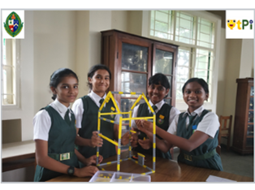
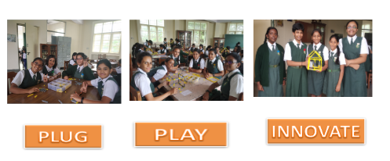
About Us : QtPi was established in 2016 and since then it has collaborated with 40+ schools, providing training in Robotics and STEAM. QtPi has achieved significant results across the schools it is collaborating with by providing not just theoretical knowledge but by providing practical and hands-on experience with the kit provided by it.In 2016 QtPi has stepped in KARNATAKA by collaborating with one of the prestigious schools, Bishop Cotton Girls School.
- Vision: "Our vision is to make children think innovative and come up with various solutions to the day-to-day problems using technology and Robotics, Inherit the knowledge and apply it in various fields and come up with distinct and innovative ideas to improve the quality of life and for the betterment of society in a sustainable way".
- Mission: "To introduce emerging technologies in Robotics and make students come up with their own ideas and projects based on their learnings, promote e-learning pedagogy and lead the teachers and students towards a better teaching learning process."
- Moto: "Our motto is "Take on the world!!" As we always encourage students to dream big, we wish to instil the quality of aiming high in children's minds."
To Know about [QtPi Robotics] (https://www.qtpi.in/)
- CHROME is a unique and one of the first Comprehensive Robotics League and Maker's Expo conducted at school level. Around 90 teams from 20 Schools and Robotics. Ourgirls made us proud by winning a few criteria in this competition.
- Our Team named as Code Vaulters won RoboCup Junior (RCJ) at national level which was held in Bangalore in 2018, qualifying to take part in International Competition RCAP.Team Codevaulters, namely, Saanvi L Dharman, Sriya Sunku, Nandana and Devaki Prasad bagged second place in the Junior category of the OnStage Performance League in TDA.
- In January 2020, Team Agribotix and Team Bot after Bot participated in Robofest organised by Novatech.
- Also in the same month Team Agribotix exhibited their bots and new methodology of Farming in a prestigious event organised by Deshapande's foundation. Students were honoured by meeting all big techies and benefitted by taking part in various technologies related seminars.
- Code vaulters
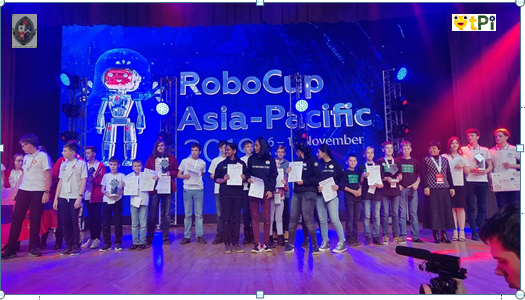
- Robofest
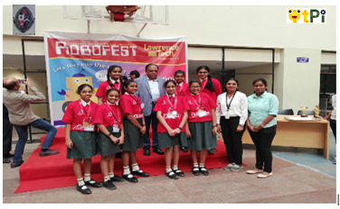
Individual achievements.
Mayo Srinidhi from Grade 6C, has come up with Minifan using an old RC car motor, wheel and a regulator.
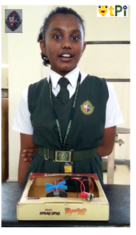
Sandhiya from 5A has done a Brooming robot using motors, plates, plastic cups and brush
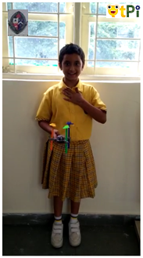
- Around 90 teams from 20 Schools and Robotics in CHROME 2019
- Academies from Bangalore and Chennai participated in CHRoME:2019.
- TEAM LUCAS- FABIOLA KATHERINE E, JESSLIN HEPHZIBAH, DEBANANNDITA RAY grade 5 won (II nd Prize in BIONICS)
- TEAM WINGS OF FIRE- SYEDA SANA AIZA, SHERIN W and NAMRATHA H of grade 5 won ( III rd Prize in BIONICS)
- Team TEHCHNEMESIS- SHOKA REDDY, GARIMA BHADRA and MYRA RIZVI of grade 8 won in ( ROBO WARZ).
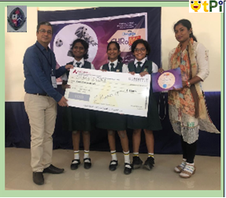 | 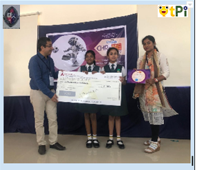 |
|
|
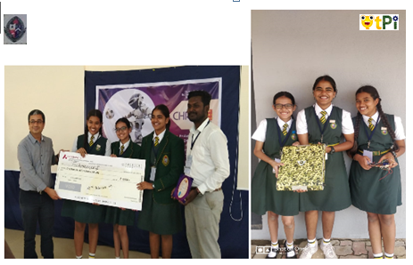
- TECHNEMESIS
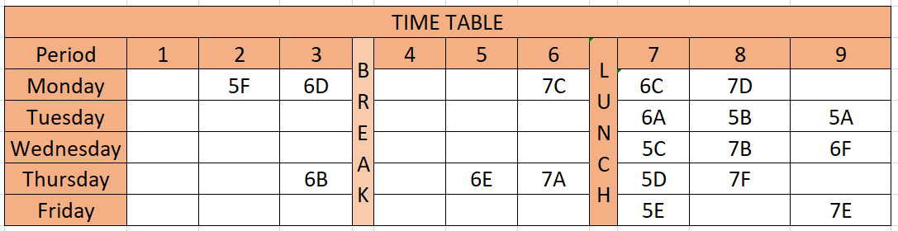
Star Students for the Academic year 2019-2020
Star Teams for the Academic Year 2019-2020
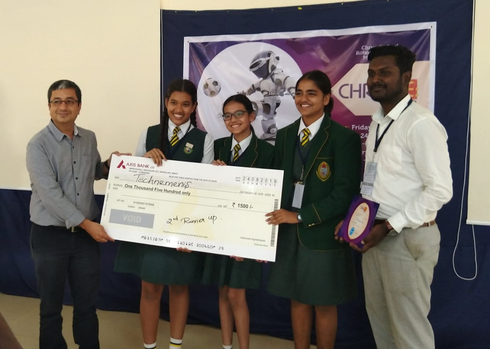
QtPi robotics Team has endeavoured tremendous effort On Robocup Junior 2019 in Moscow.
In the month of January grade 7 girls participated in ROBOFEST conducted by NOVOTECH.
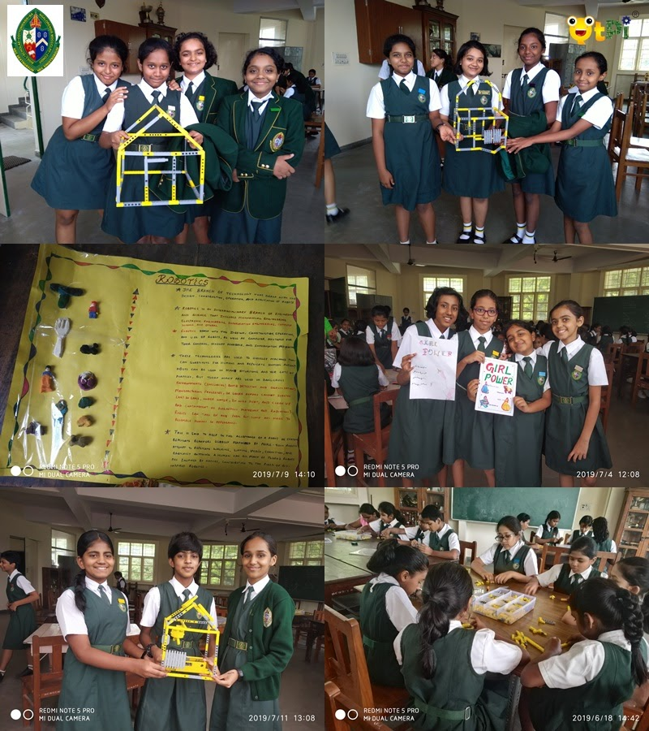
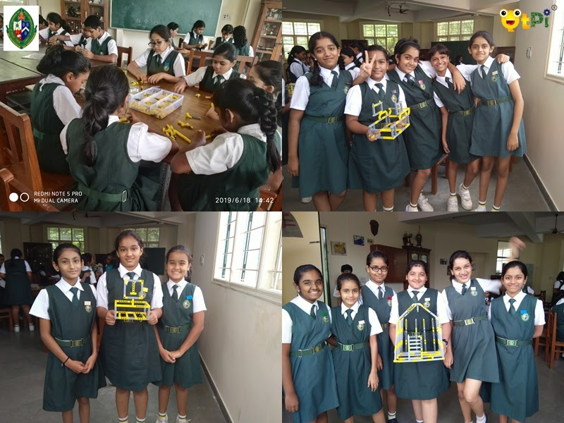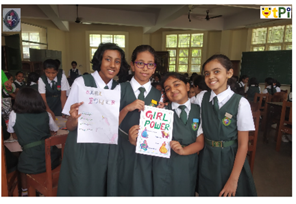
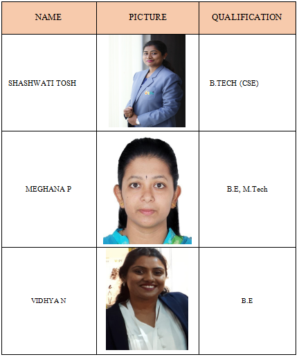
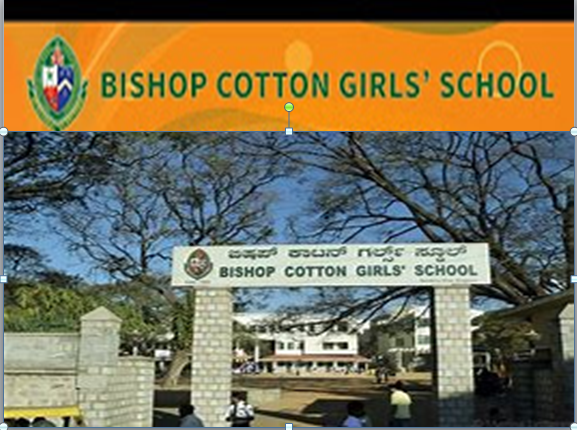
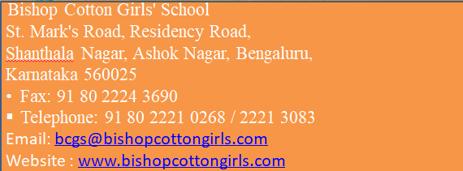
|